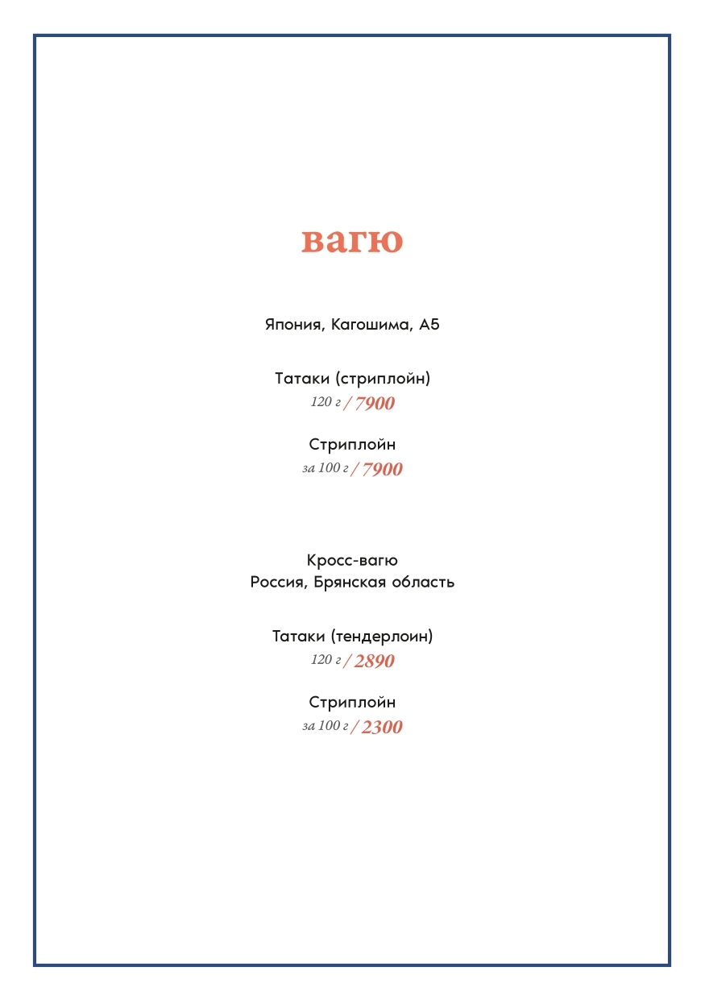
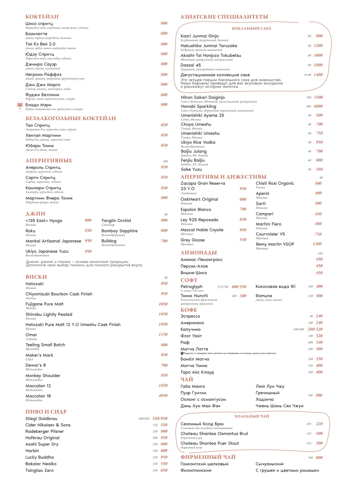
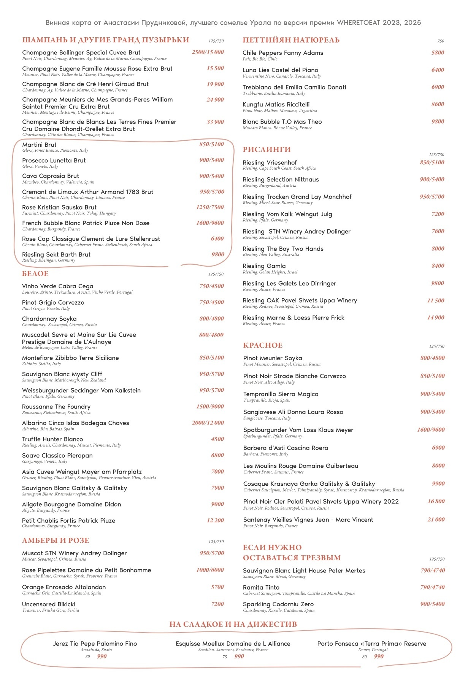
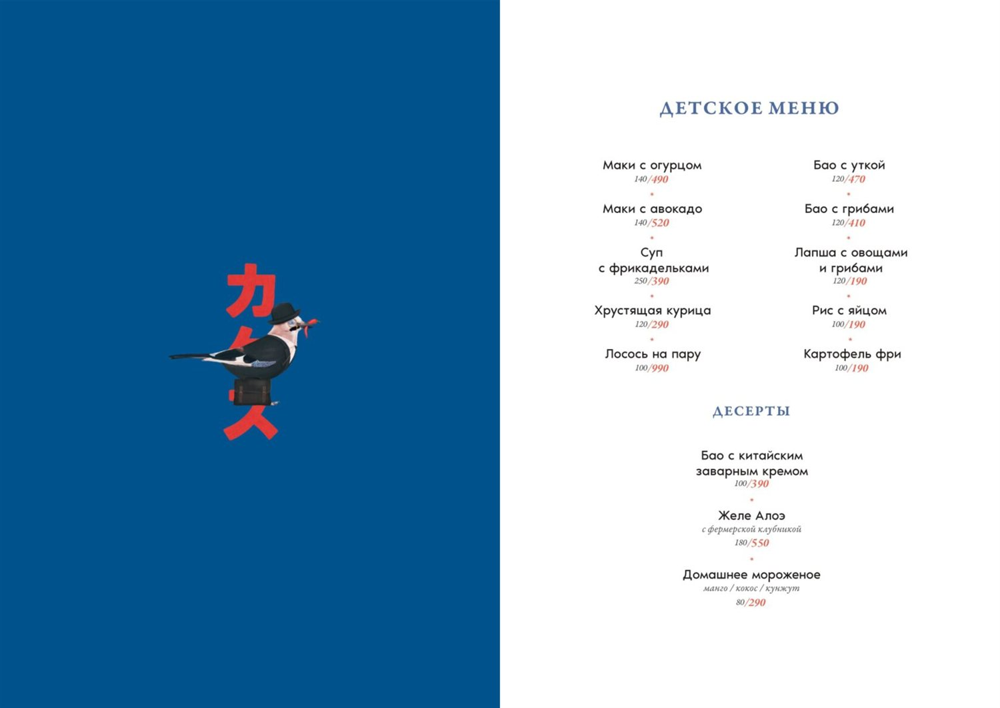
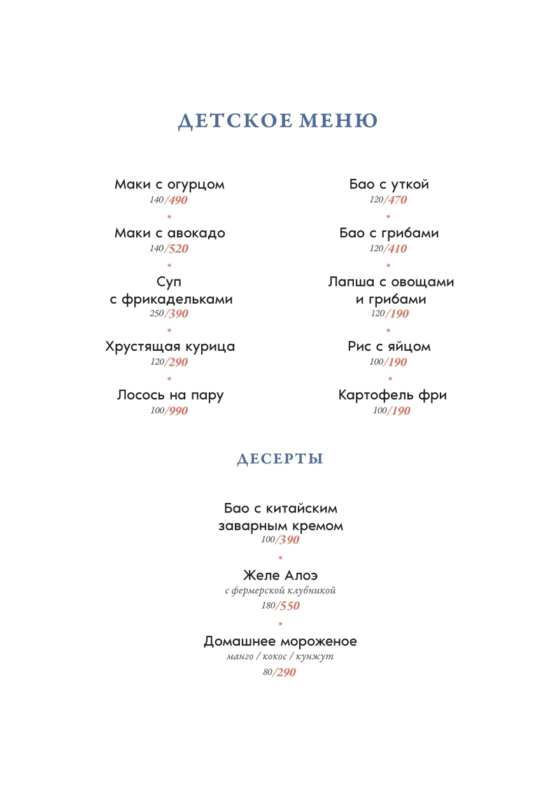
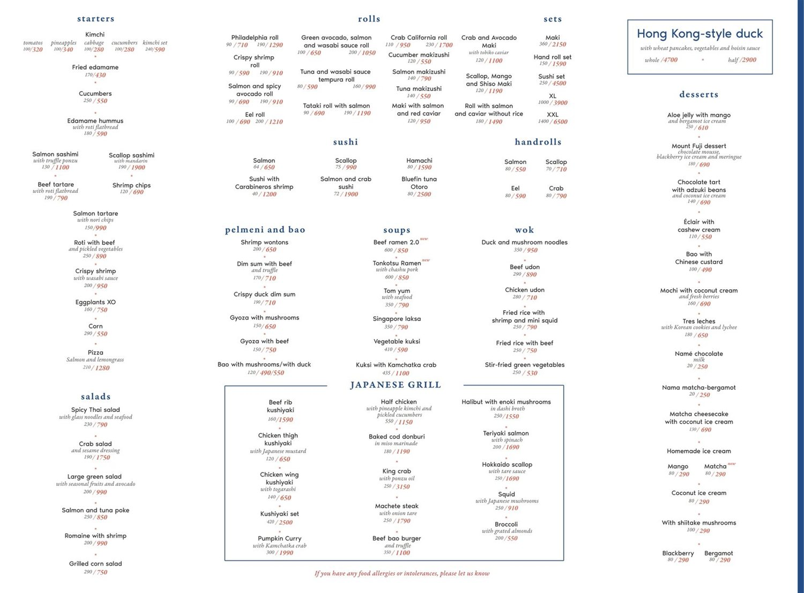
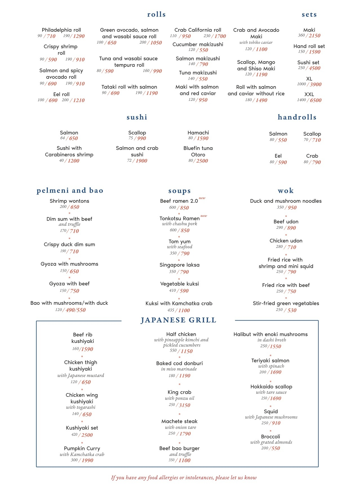
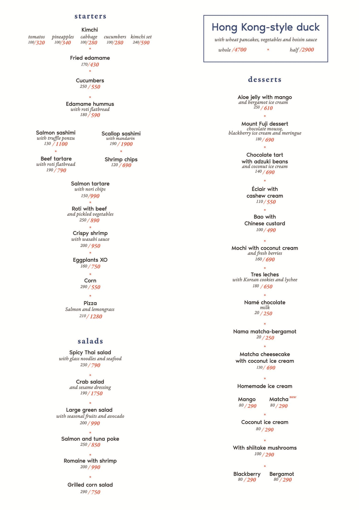

メニュー
Меню и барная карта
Предложение действует с пятницы по воскресенье








Содержащаяся на сайте справочная информация об ассортименте алкогольной продукции не является предложением о приобретении и доводится до сведения посетителей в соответствии с требованиями закона РФ от 07.02.1992 № 2300-1 «О защите прав потребителей» и Федерального закона от 28.12.2009 № 38-ФЗ «Об основах государственного регулирования торговой деятельности в Российской Федерации с учетом ограничений, установленных Федеральным законом от 13.03.2006 № 38-ФЗ «О рекламе» (в редакции Федерального закона от 27.07.2012 № 119-ФЗ).
Информация в меню не является публичной офертой.